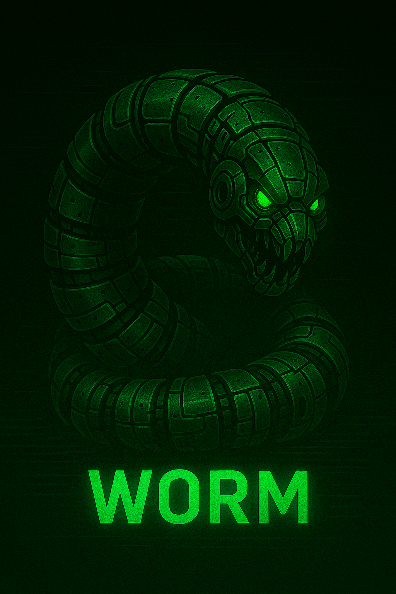

What is a Computer Worm?
A computer worm is malware that spreads on its own without user action. It takes advantage of network connections and software weaknesses to copy itself from one system to another, often very quickly. Beyond the rapid spread, worms can be used to steal data, launch DDoS attacks, drop additional malware, consume bandwidth, and generally overload networks and devices. Source
Famous Worms
- Morris (1988): Early internet worm that crashed thousands of UNIX systems.
- SQL Slammer (2003): Spread in minutes, causing global outages and router crashes.
- Mydoom (2004): One of the fastest-spreading worms, linked to massive email campaigns.
- Storm Worm (2007): Social-engineering emails lured victims with sensational headlines.
- Duqu (2011): Related to Stuxnet, used to collect data about industrial control systems.
- ILOVEYOU (2000): Emailed as a “love letter,” infected tens of millions of PCs quickly.